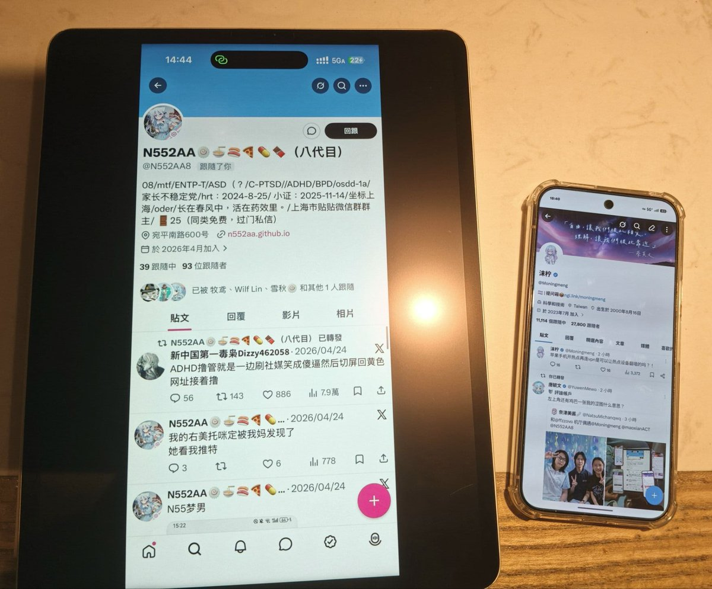

今天下午，我同 @N552AA8 进行线下会晤，同时就双方共同关心的问题深入交流并交换意见，进一步推动本人与N55交流合作向更高水平、更深层次、更宽领域迈进。
会谈期间，双方围绕促进跨圈团结、深化友好往来、扩大交流合作等议题进行了深入讨论，并进一步达成共识。双方强调，要聚焦群体所面临的重点难点问题，强化内部连结，形成群体内部团结合作的强大合力。同时，双方一致认为，只有坚持开放包容、求同存异、互相尊重原则，才能不断强化来之不易的团结局面，推动中推跨圈生态持续健康发展。
会谈双方明确了对于以博取流量为目的的神人行为的反对立场，坚决反对药物滥用，盲目自残，盲目自切，以及劝导他人进行任何不良行为的做法。并强调加强沟通、增进互信仍然是当前和今后时期的重要任务。
此次会晤恰逢冰棍被捕的关键时期，有利于增进双方了解、深化圈内友好关系、推动互动交流。必将为双方关系发展以及跨圈内部团结交流注入新的动力、增添新的活力、开辟新的空间。
会谈期间，双方围绕促进跨圈团结、深化友好往来、扩大交流合作等议题进行了深入讨论，并进一步达成共识。双方强调，要聚焦群体所面临的重点难点问题，强化内部连结，形成群体内部团结合作的强大合力。同时，双方一致认为，只有坚持开放包容、求同存异、互相尊重原则，才能不断强化来之不易的团结局面，推动中推跨圈生态持续健康发展。
会谈双方明确了对于以博取流量为目的的神人行为的反对立场，坚决反对药物滥用，盲目自残，盲目自切，以及劝导他人进行任何不良行为的做法。并强调加强沟通、增进互信仍然是当前和今后时期的重要任务。
此次会晤恰逢冰棍被捕的关键时期，有利于增进双方了解、深化圈内友好关系、推动互动交流。必将为双方关系发展以及跨圈内部团结交流注入新的动力、增添新的活力、开辟新的空间。
